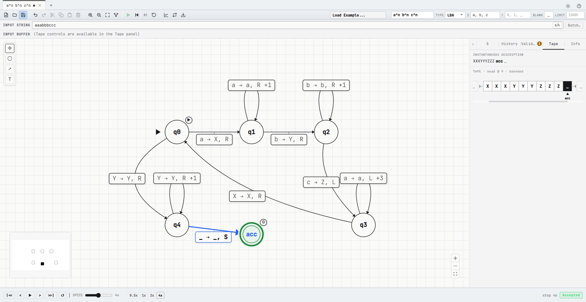
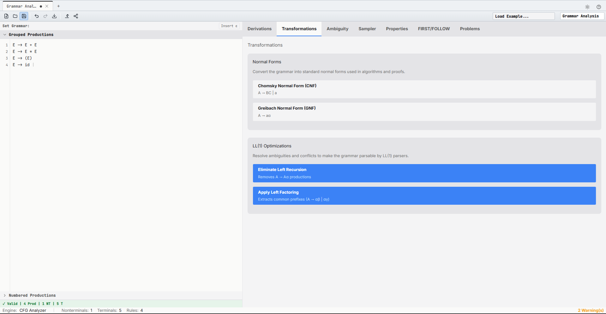
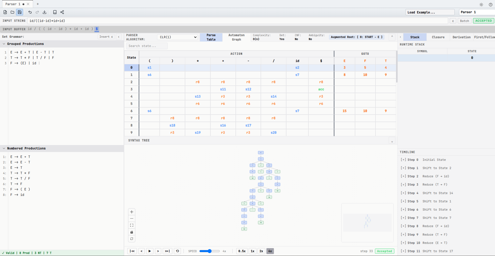
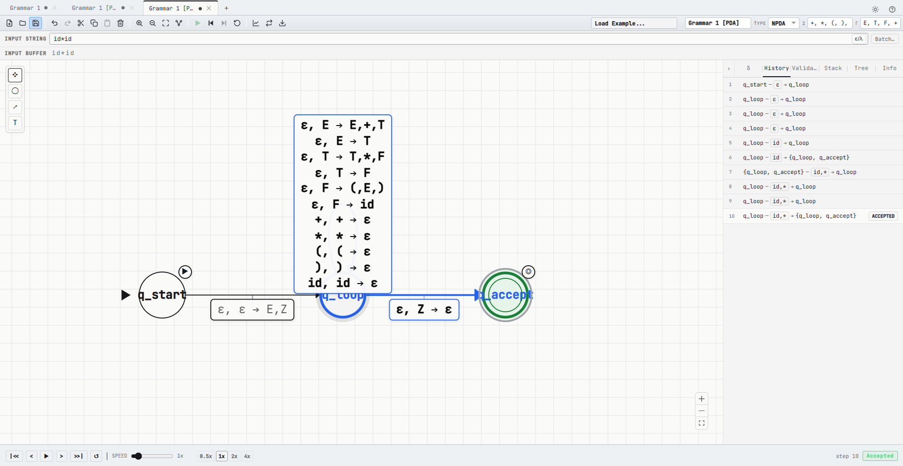
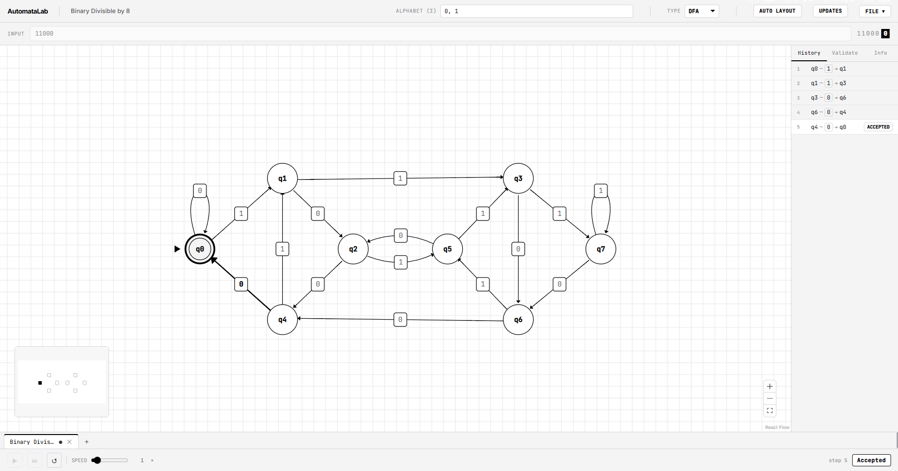
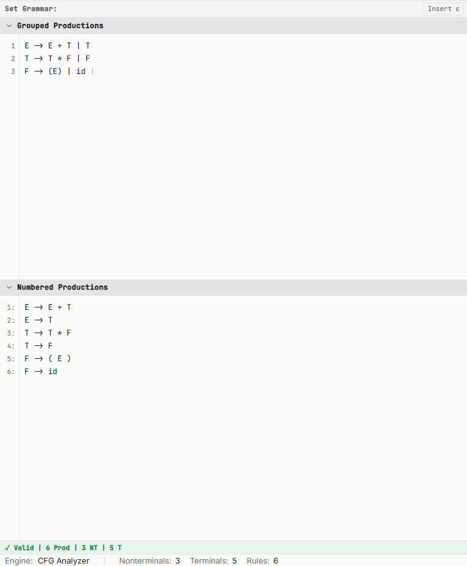
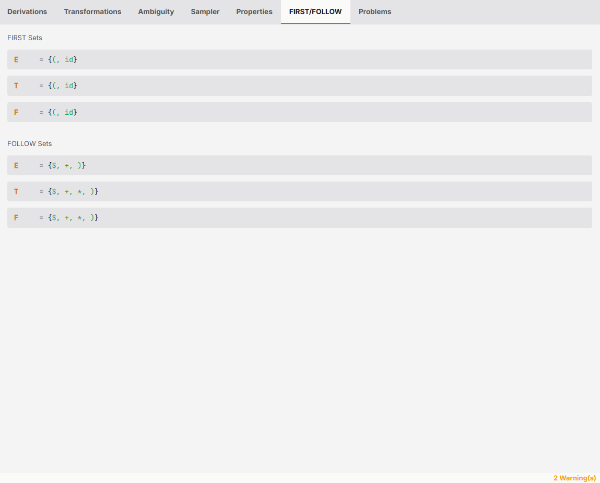
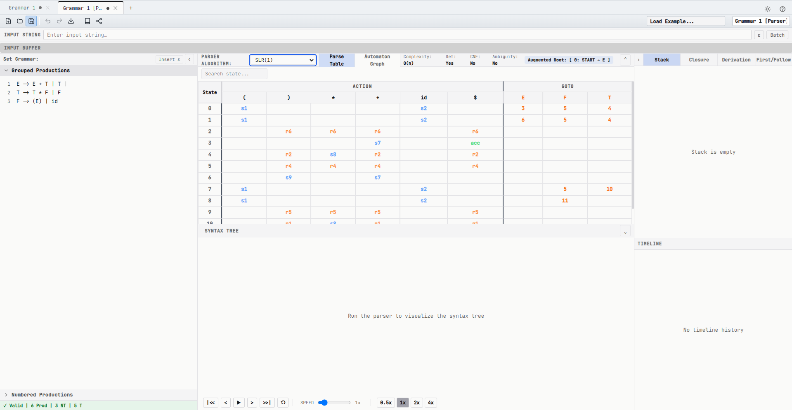

Define the grammar
Enter productions or switch to regex format (Types 0–3). Tabs stay gated until the declared type supports them.
Grammar Lab overviewFormal systems laboratory
Understand automata, grammars, and parsers—in one integrated lab
AutomataLab connects Machine Studio, Grammar Lab, and Parser Studio so you can simulate machines, analyze grammars, and step through parses with the same notation you use in class—not just static diagrams on a slide.
For students, educators, and anyone learning formal languages, automata theory, or parser construction.
Desktop builds run entirely offline. No accounts, cloud services, or telemetry.
Download desktop app View on GitHub
Use the full Tauri application for all three workspaces, or try Machine Studio in the hosted simulator with a deliberately limited feature set.
Machine Studio, Grammar Lab, and Parser Studio with local project files and imports.
.autolab.json, JFLAP .jff, grammar/parser text filesMachine Studio preview only—Grammar Lab and Parser Studio are not available in the browser build.
Each workspace targets a different representation—machines, grammars, parsers—with transfers between them in the desktop app.
Interactive canvas for finite automata, pushdown machines, transducers, and Turing models—with step, play, and batch testing.
Concepts: recognition, nondeterminism, stacks, tapes, computation trees (NFA, NPDA, NLBA).
Try: Build a DFA for even zeros, minimize it, then extract an equivalent regular expression.

Edit regex or Types 0–3 grammars; tabs unlock only when the format supports them (CFG tools do not run on unrestricted grammars).
Concepts: FIRST/FOLLOW, nullable symbols, CNF/GNF, ambiguity (Type 2), bounded derivations for Types 0–1.
Try: Enter a small CFG, compute FIRST/FOLLOW, then convert to CNF for CYK in Parser Studio.

Build LL and LR families, CYK, Earley, or recursive-descent backtracking on the same grammar syntax as Grammar Lab.
Concepts: predictive parsing, canonical LR, conflicts, syntax trees, parse timelines.
Try: Import an expression grammar, inspect the LALR(1) table, and step through a parse with the timeline.

Screenshots from the desktop app and hosted Machine Studio demo—each caption describes what you are looking at, not a marketing mock-up.





A static walkthrough of a conversion that exists in Machine Studio today. This is not a live simulation—follow the steps in the desktop app or read the machine guide.
Desktop app Regex → NFA is a Machine Studio construct. The browser demo does not replace the full conversion UI.
Choose Regex → NFA (Thompson’s construction) and enter a pattern such as:
(a+b)*abbClassic “strings ending in abb over {a,b}” language from automata courses.
AutomataLab builds an ε-NFA (result type ENFA) by composing Thompson fragments for union, concatenation, and Kleene star—each fragment has a start and accept state linked by ε-transitions.
You can inspect the combined graph on the canvas before running further conversions.
Test strings like abb (accept) vs ab (reject) with step simulation. Optionally chain ε-NFA → NFA then NFA → DFA for a deterministic view.
Machine Studio canvas—use this view after the regex construct completes (desktop).
The desktop app links representations—machines, grammars, parsers—so you can follow a course-style pipeline or jump to a single conversion. Machine Studio also supports regex and FA workflows that never touch Grammar Lab.
Machine Studio
Grammar → parser → machine
Typical cross-workspace path for a context-free grammar—the same notation is carried forward at each hand-off.
Enter productions or switch to regex format (Types 0–3). Tabs stay gated until the declared type supports them.
Grammar Lab overviewRun FIRST/FOLLOW, nullable checks, and normal-form transforms on Type 2/3 grammars so Parser Studio starts from a clean spec.
More Grammar Lab shotsOpen the same grammar in Parser Studio—LL/LR families, CYK, Earley, or backtracking—with conflict reporting where it applies.
Parser Studio overviewRun CFG → PDA (standard construction) on the canvas, then step or batch-test strings like any other machine.
Machine Studio overviewDesktop screenshots above; the hosted demo is Machine Studio only. For a regex-first path, see Regex → NFA instead of this grammar pipeline.
Machine Studio preview in the browser — full Grammar Lab and Parser Studio require the desktop application.
Simulator opens in a new tab.
Expand any item for what it does, a minimal example, and where to read more. All entries reflect behavior in the current codebase—not a future roadmap.
Builds a DFA whose states are sets of NFA states—classic powerset construction.
Example: An NFA with two paths on input a becomes a DFA state {q0,q1}.
In AutomataLab: Machine Studio Convert dialog with step-by-step trace (desktop app only—the hosted demo does not include conversions).
Machine guide →Partition refinement (Hopcroft/Moore) to merge equivalent DFA states.
Example: Two distinguishable states on string ab stay separate; equivalent states merge.
In AutomataLab: Minimize DFA conversion on DFA input.
Machine guide →Eliminates epsilon transitions while preserving the language.
Example: ε-closure adds reachable states before reading the next symbol.
In AutomataLab: ε-NFA → NFA conversion.
Machine guide →Finds states unreachable from the start and states that cannot reach acceptance.
Example: Prune unused branches before minimization or reporting.
In AutomataLab: Analyze panel in Machine Studio.
Machine guide →Computes terminal lookahead sets for CFG parsing and table construction.
Example: For E → T E', FOLLOW sets drive LL(1) table rows.
In AutomataLab: Grammar Lab FIRST/FOLLOW tab (Type 2/3).
Grammar guide →Normal-form conversions used in CYK and some theoretical proofs.
Example: Binary productions with terminals on the right in CNF.
In AutomataLab: Transformations tab (Type 2/3).
Grammar guide →Searches for a string with two distinct parse trees (context-free grammars only).
Example: Classic dangling-else style grammars.
In AutomataLab: Ambiguity tab (Type 2 only—not regex or Type 3).
Grammar guide →Searches for derivations with explicit depth/length limits.
Example: RESOURCE_LIMIT means “not found in time”, not a proof of non-membership.
In AutomataLab: Derivations tab with limit messaging for unrestricted grammars.
Grammar guide →Top-down predictive parsing from an LL(1) parse table.
Example: Table-driven expansion on a small expression grammar.
In AutomataLab: Parser Studio with conflict reporting when the grammar is not LL(1).
Parser guide →Bottom-up LR families with item sets, GOTO, and closure; conflicts surfaced in the UI.
Example: Shift/reduce conflict on a dangling-else grammar in SLR vs LALR.
In AutomataLab: Parse tables, optional LR automaton graph, stepped simulation.
Parser guide →General CFG parsing—CYK needs CNF; Earley handles arbitrary CFGs in the implementation.
Example: Membership test on short strings with visible chart or table filling.
In AutomataLab: Parser Studio algorithm picker with syntax tree output.
Parser guide →Educational backtracking parser for exploring nondeterministic parse choices.
In AutomataLab: Parser Studio backtracking mode with timeline stepping.
Parser guide →Constructs an ε-NFA from a regular expression.
In AutomataLab: Machine Studio regex construction.
Machine guide →State elimination to extract a regular expression from a finite automaton.
In AutomataLab: Extract conversion; result can open in Grammar Lab.
Machine guide →Standard single-state NPDA construction from a context-free grammar.
In AutomataLab: Machine Studio construct from CFG text.
Machine guide →Triplet construction with automatic PDA normalization.
In AutomataLab: Extract on DPDA/NPDA; embedded grammar text can round-trip to Grammar Lab.
Machine guide →Grammar Lab and Parser Studio gate tools by Chomsky type. This table matches the application’s format checks—not every theoretical possibility.
| Format | Parser Studio | FIRST/FOLLOW | CNF/GNF transforms | Ambiguity search | Derivations | Typical machine targets |
|---|---|---|---|---|---|---|
| Regex | Yes (adapted to Type 3) | No | No | No | No (use Sampler) | DFA–TM family |
| Type 3 | Yes | Yes | Yes | No | Yes | DFA–TM family |
| Type 2 (CFG) | Yes | Yes | Yes | Yes | Yes | NPDA, NLBA, TM |
| Type 1 (CSG) | No | No | No | No | Yes (bounded) | NLBA, TM |
| Type 0 | No | No | No | No | Yes (bounded) | TM |
Regex and Type 3 grammars can be sent to a wide range of machine targets; Type 2 adds NPDA; Types 1 and 0 use bounded recognizers on NLBA or TM in Machine Studio.
Pick a goal—each path maps to a workspace and a sensible first step in the desktop app or browser demo.
See whether inputs are accepted and how state changes step by step.
Start in: Machine Studio — load the “even zeros” example in the browser demo or build your own DFA on desktop.
Try browser demo →Follow subset construction or partition refinement with intermediate steps.
Start in: Machine Studio → Convert (desktop app only).
Machine guide →Prepare a grammar for LL/LR tables or CYK.
Start in: Grammar Lab on a Type 2/3 grammar, then open Parser Studio.
Grammar guide →Compare SLR, LALR, and CLR tables on the same grammar.
Start in: Parser Studio (desktop).
Parser guide →Watch stack and tape heads during simulation; inspect computation trees for nondeterminism.
Start in: Machine Studio — NPDA “balanced parentheses” or TM examples (demo includes selected types).
Launch demo →Step execution live; use in-app F1 User Manual and F2 Theory Handbook on desktop.
Start in: Desktop build for full workspaces; cite the project in academic materials.
Citation block →Install the desktop app, try the browser demo, or read the wiki for workspace-specific depth.
.autolab.json / JFLAP .jff in Machine Studio.Prefer the browser? Launch the Machine Studio demo — Grammar Lab and Parser Studio require the desktop app.
FIRST/FOLLOW analysis, conversions, ambiguity detection, and diagnostics.
Read Guide →Internal architecture, state management, and application design.
Read Architecture Docs →Project structure, serialization format, and compatibility guarantees.
Read Format Spec →Development workflow, standards, and contribution process.
Read Contributing Guide →Community-maintained documentation, tutorials, examples, troubleshooting guides, and project knowledge base.
Read Wiki →If you use AutomataLab in your research, teaching, or publications, please cite it as follows:
@software{sinha2026automatalab,
author = {Sinha, Reeshav},
title = {{AutoMataLab}: An Integrated Environment for Automata, Grammars and Parser Construction},
year = {2026},
url = {https://github.com/reeshavsinha/AutomataLab}
}Runs completely offline. No telemetry. No cloud services. No account required.
Download the full offline lab, or start with the hosted Machine Studio demo. Documentation and source code are always one click away.